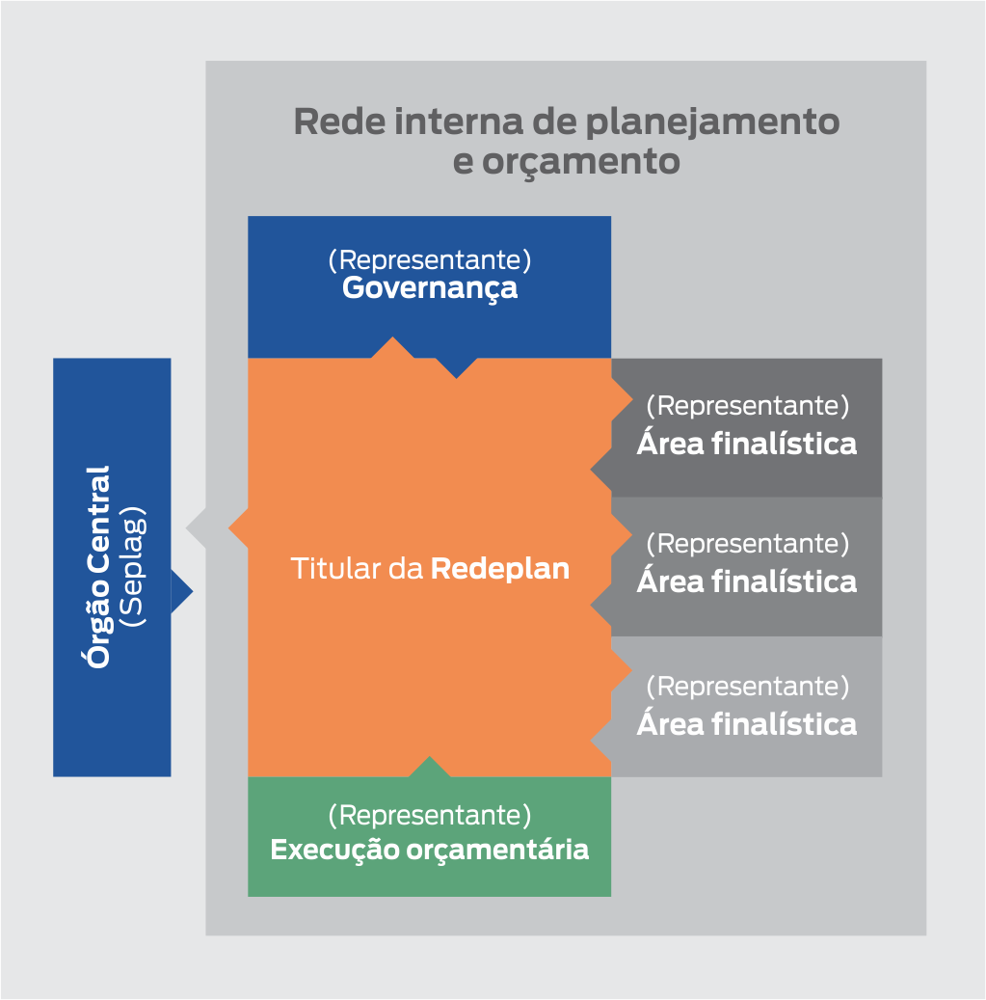

Nos órgãos setoriais, os integrantes da Redeplan são responsáveis por conduzir junto às redes internas de
planejamento de suas Secretarias ou entidades os processos de planejamento coordenados pela Seplag, em particular
os relativos à elaboração, monitoramento, avaliação e revisão do PPA. Eles fazem a ponte entre o órgão central e a
rede interna, composta por representantes da governança, das áreas finalísticas e da área responsável pela
execução orçamentária.

Nas Secretarias de Estado, os titulares da Redeplan são os
Assessores Setoriais de Planejamento e
Orçamento
(Asplos). Dois servidores - titular e suplente - devem ser indicados formalmente para a Redeplan. Em
órgãos
setoriais que fazem parte da Administração Indireta, a criação dessas assessorias é facultativa.
As ASPLOs são subordinadas tecnicamente à Seplag e administrativamente ao Secretário de Estado, podendo ser
delegadas a alguma estrutura da governança do órgão, como a Chefia de Gabinete, Subsecretaria Executiva ou
Subsecretaria Geral. Seus titulares devem ser, preferencialmente, servidores da carreira de Especialista em
Políticas Públicas e Gestão Governamental, Planejamento e Orçamento (EPPGGPO).
As ASPLOs são responsáveis por conduzir a elaboração, monitoramento, avaliação, e revisão dos instrumentos de
planejamento e orçamento coordenados pela SEPLAG:
- Plano Plurianual (PPA);
- Lei de Diretrizes Orçamentárias (LDO);
- Planejamento Orçamentário Detalhado (POD);
- Lei Orçamentária Anual (LOA);
- Plano de Investimentos do Poder Executivo, do Estado do Rio de Janeiro (PIERJ).
Além de conduzir esses processos em seus órgãos, as ASPLOs podem ser responsáveis por outras atividades de
planejamento, tais como:
- Alinhamento dos instrumentos de planejamento e orçamento a diretrizes estratégicas de governo;
- Compatibilização entre a programação do órgão e planos setoriais ou regionais;
- Produção de estudos e diagnósticos relativos à área de atuação da Secretaria;
- Assessoria para fomentar o alinhamento do Plano de Contratações Anual aos instrumentos de Planejamento e
Orçamento;
- Monitoramento de projetos prioritários da Secretaria.
Para saber mais, veja o
Decreto nº 48.413/2023, que
cria as Assessorias Setoriais de Planejamento e Orçamento (ASPLOs) e reestrutura o Sistema de Planejamento e
Orçamento (SPO).
Acesse também o
Guia do Ingressante da Redeplan e o vídeo
Como funciona a Redeplan? em nosso
canal da Rede de Planejamento no YouTube.